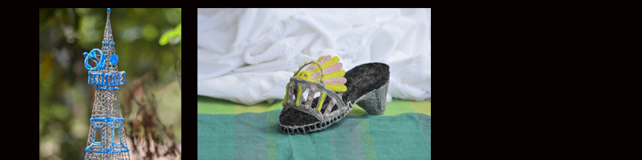
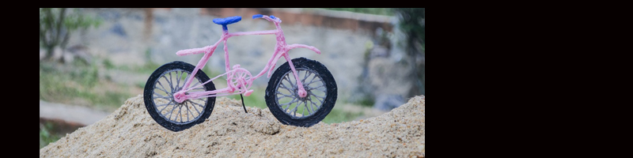

Future: Let's Imagine
The Scribble Pen in general is already a pen with numerous technological advances. Who would of thought that a pen would be able to scan colors and come out in the color you want. No more trying to figure out the color name!
However, what would be even more amazing, hopefully in 100 years, the pen would go above and beyond and be able to start mixing colors or creating colors of our own. Imagine a pen that could make an endless amount of colors. We would be able to pick colors to our heart’s content. The possibilities are endless!
How about a pen that would be able to capture anything you write, hear, or speak? A pen that has memory: for storing sound, your written notes for upload, and apps you can launch just by tapping a line you've drawn on paper. The pens can also be used to create "pencasts" which recreate the movements of the pen, as well as recording the accompanying audio. Some of the pencasts, which range from calculus lessons to cartoons, have been viewed more than 40,000 times. Jim Marggraff, CEO of Livescribe, shows us how it's done, using an 8GB Echo smartpen, and says it is currently a huge project that they are working on.
Another pen that has been a very popular topic is the 3-D pen. This pen is already present today, but designers are improving and changing things everyday. Surprisingly, Scribbler also invented a 3-D pen. The 3-D pens replace ink with plastic which melts at a high temperature which is used to draw in the air or on a surface to create a 3-D object. With those 3-D pens, you can easily control extrusion speed, temperature, and choose the plastic filament. It is a perfect for designers who are interested in things like object modelling, designing garments, architectural models, model instruments, and much more! However, this invention is still currently in the works for better improvement and success. Look out for it in the future! If you are interested in purchasing the current model, click here to go to the website!
 